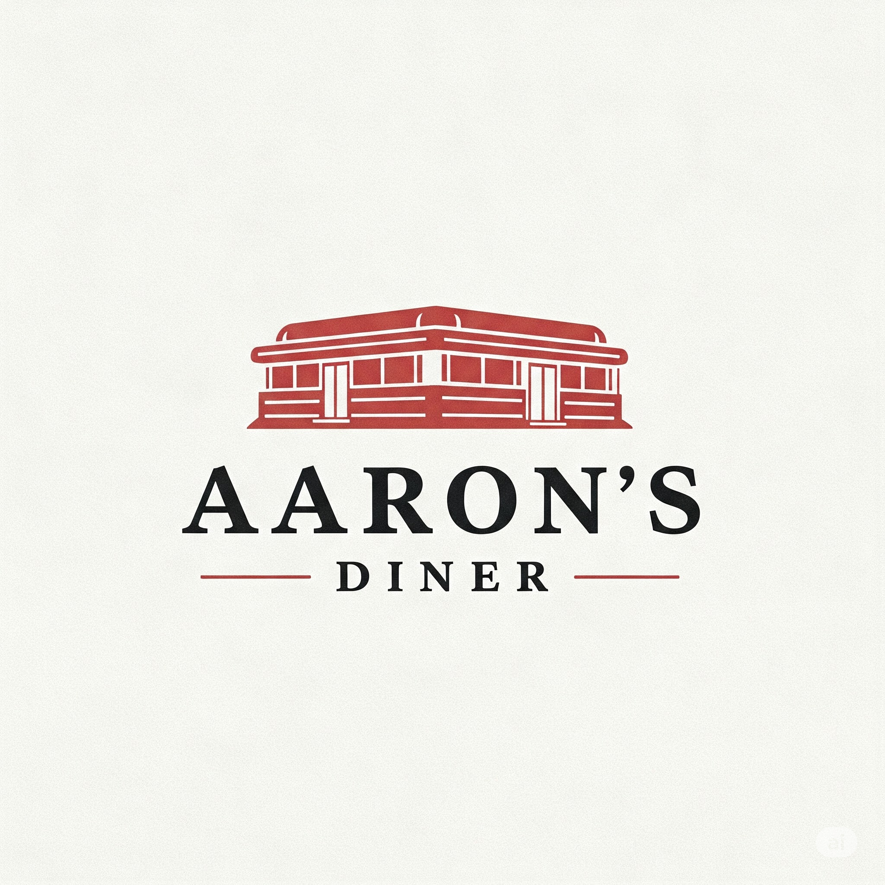

About Us
Since 1990, Aaron's Diner has been a beloved spot for locals and visitors alike. What started as a small family-run kitchen has grown into a warm and welcoming space where tradition meets taste. We are passionate about crafting meals that not only satisfy hunger but also create memories.
At the heart of our menu is a commitment to freshness. Every dish is made with locally-sourced ingredients, carefully prepared by our skilled chefs who pour love into every plate. Whether you’re stopping by for a hearty breakfast, a cozy lunch, or a relaxed dinner with friends, we aim to make every experience feel like home.
Our team is dedicated to providing excellent service, delicious food, and a warm atmosphere that keeps guests coming back. Aaron’s Diner is more than just a place to eat — it’s where the community comes together to share great food and even greater moments.
